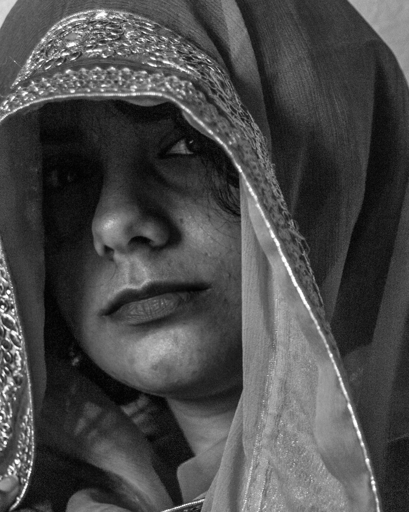

Anjali Suthar
She Was a Girl
She is a girl With a fire in her soul And a need Burning Consuming Inextinguishable To change The world She is a girl With dreams in her eyes And a vision Of the world At peace And of her Standing On top of it
She is a girl
With too many questions
And not enough answers
And not enough time
To find them
Before she is brought back
Inside the house
And is told that
Girls
Did not
Could not
Should not
Change the world
She is a girl
With anger in her heart
As she watches
The boys she played with
Turn into men
And she sees the world pour itself
Into their hands
Into their mouths
Into their command
And she wonders
What she did so wrong
That the world won't do
The same
For her
She is a girl With defiance in her blood Her blood Which boils And burns And sings The song of fury As she is told She will no longer Continue to go To school Because now Now she must learn How to make a home How to build a family And she cannot understand Why men Did not need This skill Which was seemingly So important It eclipsed the need To learn And ask questions And find answers And to change The world

She is a girl No She is a woman now With numbness in her bones As she nods to every question Her future in-laws ask her As if she is at an interrogation For a crime she did not commit As she hears her mother’s voice In her ear Telling her Not to let her veil fall Off of her head And to keep herself Covered Telling her To keep her eyes downcast To keep her voice quiet To keep her dreams hidden As she feels the eyes Of the man She is to marry Burning a hole Into her skin With his contempt
She is a woman With a fire in her soul A fire Which was once Burning Consuming Inextinguishable But now slowly Begins To Die Until there is Nothing left But Ash